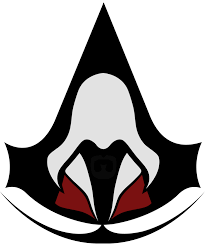
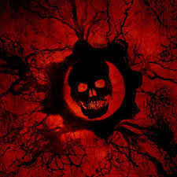

ASSASINS CREED |
|
 |
La historia del Assasin´s Creed se trata de un credo de asecinos que buscan el bien para el mundo
siguiendo las reglas del credo: 1)Aparta tu hoja de la carne del inocente 2)Camúflate entre la gente y fúndete con la multitud 3)Nunca Comprometas a la Hermandad Siguiendo estas reglas la hermandad defiende a la humanidad de los templarios y de las injusticias |
GEARS OF WAR |
|
|  |
La historia del Gears Of Warse basa en un mundo invadido por seres subterraneos llamados los locust comandados por la reina Myra, Marcus Fenix un soldado en contra de los locust, se metera en una exelente saga de aventuras. |
FALLOUT |
|
|
El protagonista de Fallout es un habitante de uno de los búnkeres antinucleares (conocidos como Vaults) construidos por una empresa de tecnología
llamada Vault-Tec con la idea de preservar la vida humana hasta que el invierno nuclear haya pasado. El juego se desarrolla en el año 2161 en el sur de California. El Chip de Agua del búnker, que controla el bombeo y reciclado de agua, se ha estropeado, y se encomienda al protagonista la misión de buscar uno nuevo. |